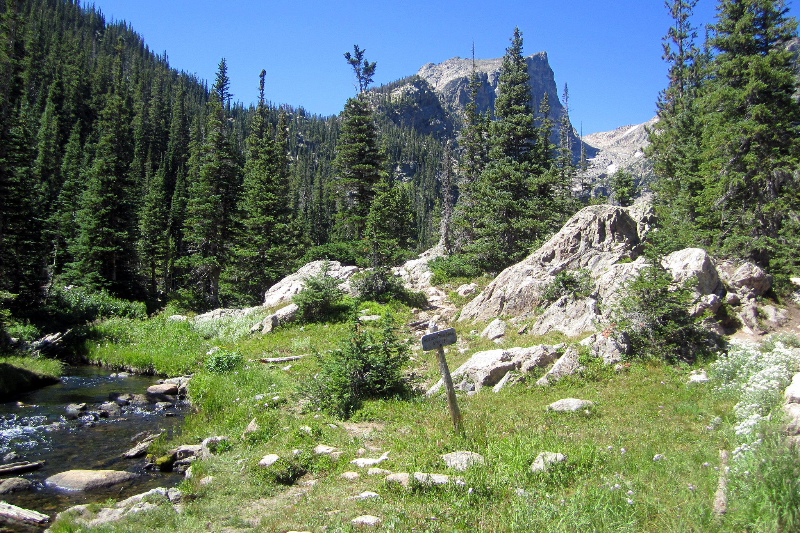
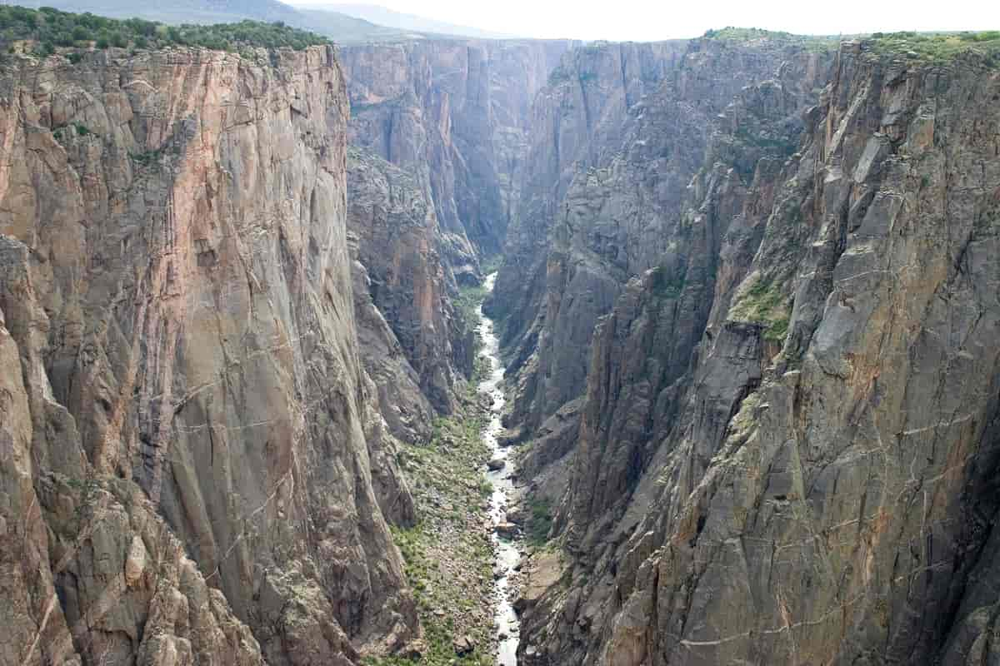
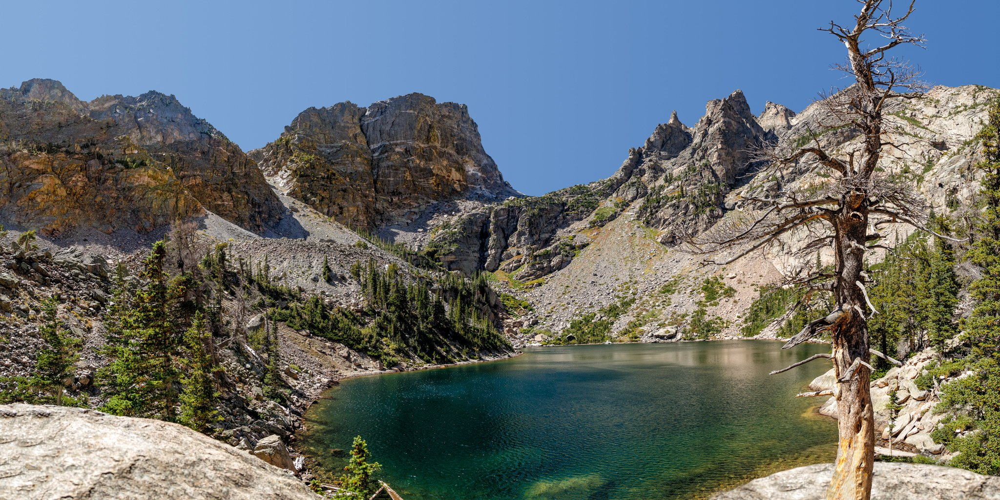
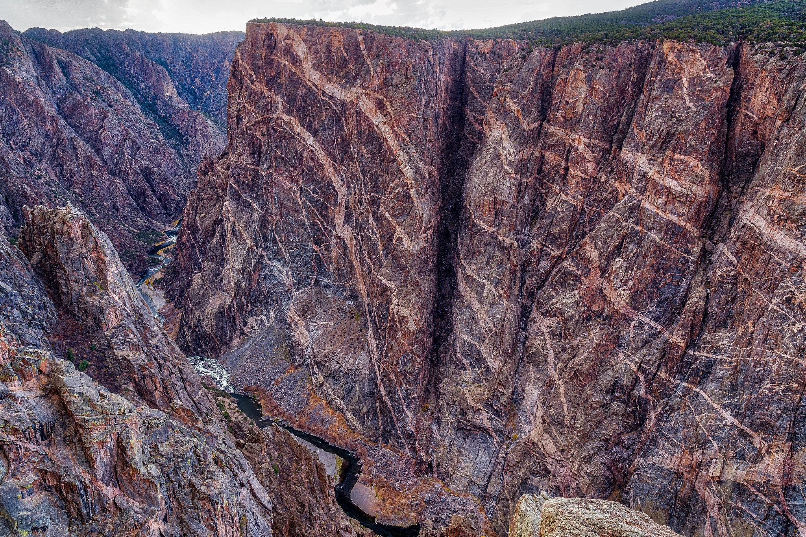

Rocky Mountain National Park (A Sight only John Denver could sing about):
Personally growing up in Colorado and only about 2 hours away from Estes Park Colorado, I can say that Rocky Mountain National Park perfectly encompasses its mountainous beauty. Camping in Rocky Mountain are some of my favorite memories and some of the prettiest places I’ve ever been to in my life.
Black Canyon of the Gunnison (The Forgotten Park):
One of the farther ones from my hometown, but still a very pretty site to see. A rigid and steep canyon that can shake up anyone who dares stand on the edge. Black Canyon is Located near Gunnison Colorado and runs 48 miles through one of the steepest canyons in the World. As well as being one of the deepest canyons in the world, it has also been one of the least visited national parks in the Nation. When you see pictures of it it’s hard to see as its shard cuts and jagged landscapes offer many sights for people to see.
History of Rocky Mountain:
Rocky Mountain Is not the most friendly land, this land made it hard for anybody to settle it or live in it for a really long time. The only history being Ute Native Americans and other Tribes taking advantage of the green pastures in the summer. After the Louisiana purchase there were different expeditions that went through meaning to explore the land and document the newly acquired space. During these expeditions they would see the vast beauty and land the area has to offer, which in turn created a push to conserve it. After support from different parties President Woodrow Wilson would sign the Park in existence, allowing its nature and beauty to be shown to different generations.
History of Black Canyon:
Black Canyon has been famous due to its danger, this danger enticed people who were moving west to try to explore the depths of the Canyon for their own and claim pride. Five Famous expeditions allowed the service to get a gauge on the area. These expeditions provided insight to the river where different legs went, and documented the 48 miles of waterways. The canyon is a rough, rigid area that is hard to maneuver through and almost harder to get down and through. But thanks to the work of others hundreds of years ago we can now use the canyon that was a National Monument before becoming a park in 1999 to preserve it.
Landmark: Emerald Lake
Emerald Lake is one of the most popular hikes in Rocky Mountain National Park and after doing it you can see the reason. Sitting near the top of Flattop Mountain is Emerald Lake, an Alpine lake that is home to stunning views of Rock Mountain National Park and the Beautiful mountains that dominate the area. The high elevation gain may defer some from going but the hike is definitely worth the stunningness that area holds. Go later in the summer to make sure you avoid snow and ice as it’s covered in it for most of the year.
Landmark: Painted Wall
Painted wall is one of the bigger walls of the Canyon and offers a beautiful view of the rock formations. Showing the big Drop, Painted wall offers a distinct color and erosion pattern that helps tell the story of how the canyon was first formed. With a beautiful overlook of the whole canyon is a place you will for sure want to swing by.
Campsites in Rocky Mountain:
- Moraine Park
- Aspen Glen
- Longs Peak
- Glacier Basin
- Timber Creek
Campsites in Black Canyon:
- South Rim
- North Rim
- East Portal